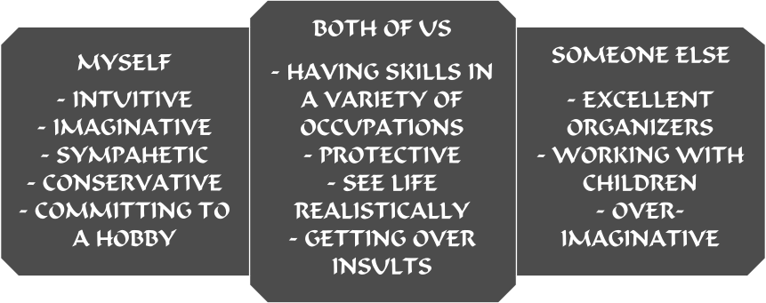

JOSEPH CHRISTIANSEN | ENGLISH - B4
How you think your sign fits and how someone else does.
Cancer corresponds to chapter four of Grendel by John Gardner. Cancer has traits such as: emotional, nurturer, and intuitive. In chapter four of Grendel the songs of the Shaper can be compared to the traits of Cancer. The Shaper’s songs describe a religion that can nurture it’s people.